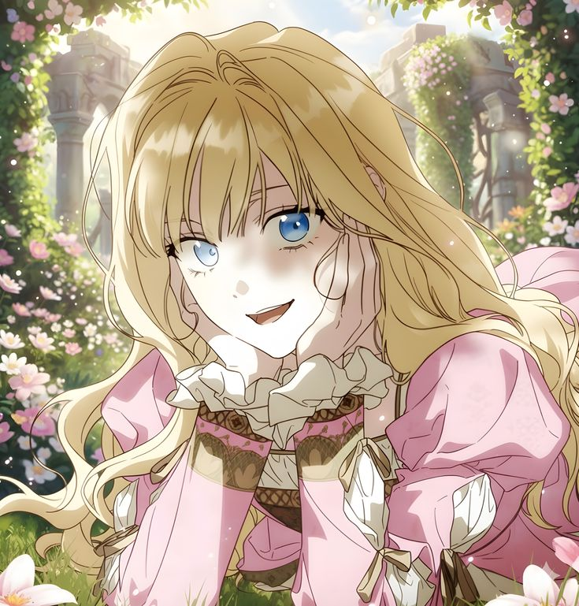

Click the flower, Rae

I’ve been staring at my laptop for a long time trying to figure out how to even start this. HAHAHAHAHAHA I know we’re supposedly just friends and just oomfs who have been teasing each other since December. For a long time, I tried to convince myself that was enough. Even now, I’m so conflicted because part of me is terrified to risk what we have.
I don’t want to lose the asaran or the comfort we have. But another part of me is just tired. It’s getting so hard to fool myself into thinking that I don’t feel anything deeper. Honestly, I’m not as good at acting cool as I thought I was 🥀
I know I’ve passively said "crush kita" a million times before. I know I always throw it out there as a joke or like it’s a part of our routine na. But that’s the thing. I was using those jokes as a shield because I was too scared to see what would happen if I said it for real. But I’m done hiding behind the 'joke version' of us. I’m confessing seriously now because I realized I really want you, Rae. I want you bad and no amount of playful teasing can cover that up anymore.
The truth is, I yearn for you in a way I don't even say straight up. Even if I try to keep it lowkey, I think our friends already know how badly I want you. (sobrang halata) It’s that obvious to everyone else even if I’m here trying to play it off like I’m unfazed. I’ve become so attached to you in a way I didn't see coming. You’ve become the person I subconsciously look for the moment I’m online and it’s reached a point where my whole feed reminds me of you.
I can’t scroll past anything related to Snoopy or My Melody without immediately wanting to send it to you. Every time I see Zhizhi, Fluttershy, or Ruby, it’s like a reflex. My mind just goes straight to you.
I’ve realized that I actually need you around more than I’ve ever let on. I need those warm chats and I need the way you just are. Bro I'm so done. I’m done pretending that I don't get a literal rush every time your name pops up on my screen. It’s scary as hell to say this because I don’t want to make things awkward. But I can't keep pretending that this is just a simple crush. It’s much more than that. I’ve fallen for you way harder than I ever intended to. My heart just isn't on the same page as my "maangas" act anymore.
I’m not asking you to change anything or to feel the same way right now. I just couldn’t go another day carrying this around and lying to myself. You deserve to know that you’re the person I’m always thinking about even when I’m acting like I’m not. I like you, Rae. Not as a joke. I like you for real. Crush na crush kita please 😭🙏